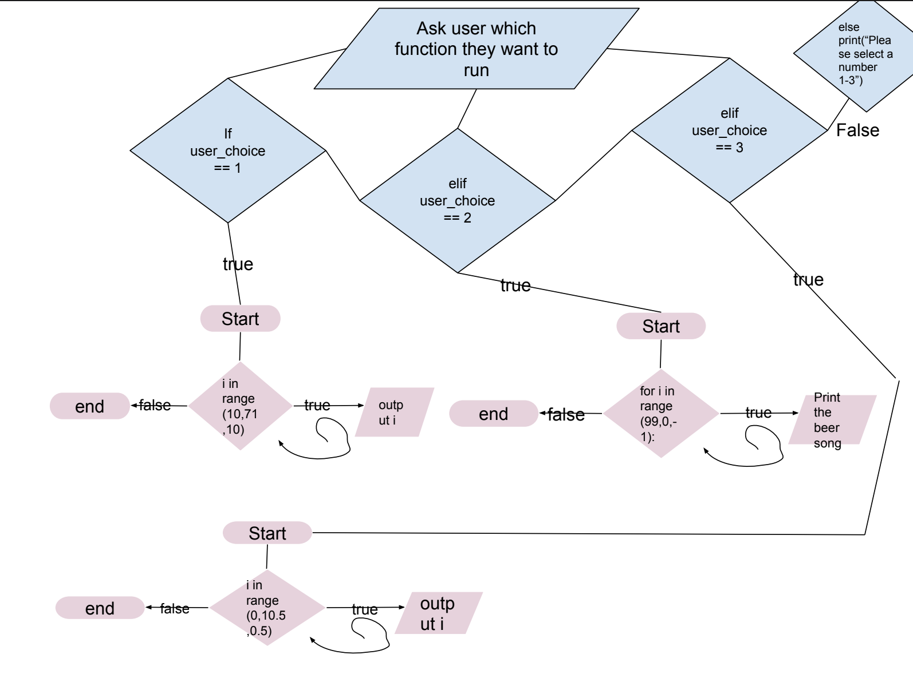
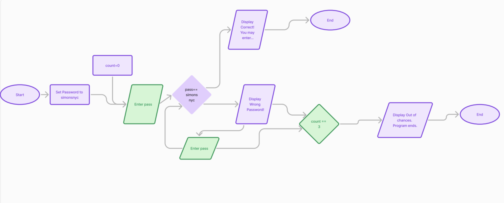

CFU#1:
In this CFU we learned how to create variables, use input, and use print. Using those 3 things we were able to create a program that allows the user to input their first and last name and the computer will output "Hello" with their name.
See CFU in another tab
CFU#2:
In this CFU we learned how to use int and str. Int is used for numbers and we use str to make it a string when using it with other strings. The program will prompt the user to answer questions and out a sentence with those answers
See CFU in another tab
CFU#3:
In this CFU we learned how to do basic operations (multiplication, division, additon, and subtraction) using python. The programs prompts the user to enter their name and 2 numbers. The computer will then use those 2 number to run the operations and output what the equations are equal to
See CFU in another tab
CFU#4:
In this CFU we learned what import math was which would allow us to use square root, absolute value, exponents, etc. We created a prorgram where the user is prompted to enter 2 numbers. Those 2 numbers will then go through the quadratic formula and then roots will be outputted
See CFU in another tab
CFU#5:
For this CFU the user had to enter the amount of pennies, nickels, dimes,quarters, toonies, and loonies. The program we created will then calculate how much money the user has.
See CFU in another tab
CFU#6:
In this CFU we created a program we used import random and import math to as the user to enter a number and then another number will be randomly picked by the computer. Those 2 number will then go through the operations the program has and ouput the answers to those equations.
See CFU in another tab
CFU#7:
In this CFU we learned how to create functions. Using those functions the program will run finding the sum and average of the numbers.
See CFU in another tab
CFU#8:
In this CFU we learned about if-else statement. Using that we created a program that ask the user if they ordered delivery and if they did the cost and the cost per person.
See CFU in another tab
CFU#9:
In this CFU we created a program that ask the user how many times they want to roll the dice. For every round a random number will be picked and the user has to guess the number.
See CFU in another tab

click photo to see bigger
CFU#10:
In this CFU the program uses import random to generate a random number. The user then has to guess the number that was generated.
See CFU in another tab

Click photo to see bigger
CFU#11:
In this program the user get to pick what function they want to run. Once they input it the function will then run.
See CFU in another tab

Click to see photo bigger
CFU#12:
In this the user get to pick what version they want. Version 1 allows the user to guess the password infinite times. Version 2 allows the user 3 guesses
See CFU in another tab

Click to see photo bigger